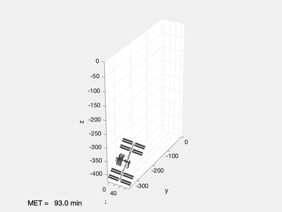

Animate a nanosat near the ISS
It creates and saves a movie.
------------------------------------------------------------------------ See also: AnimateSpacecraft, SaveMovie, ISSOrbit, CoplanarOrbit, RVOrbGen, QLVLH ------------------------------------------------------------------------
%-------------------------------------------------------------------------- % Copyright (c) 2020 Princeton Satellite Systems, Inc. x % All rights reserved. %-------------------------------------------------------------------------- % Since 2020.2 %-------------------------------------------------------------------------- % Load models g1 = load('Nanosat'); g2 = load('ISS'); % Start with the ISS orbit el1 = ISSOrbit; % The nanosat is 50 m below the ISS el2 = CoplanarOrbit(el1,-0.05); % Generate the trajectories t = linspace(0,Period(el1(1)),50); [r1,v1] = RVOrbGen(el1,t); [r2,v2] = RVOrbGen(el2,t); % Both are aligned with local vertical local horizontal q1 = QLVLH(r1,v1); q2 = QLVLH(r2,v2); % Animate the ISS and nano satellite AnimateSpacecraft( 'initialize', g1, g2, r1(:,1), v1(:,1), q1(:,1), r2(:,1), v2(:,1), q2(:,1) ); view(30,30); m = AnimateSpacecraft( 'update', t, r1, v1, q1, r2, v2, q2 ); % Save the movie SaveMovie(m,'ISSMovie') %--------------------------------------